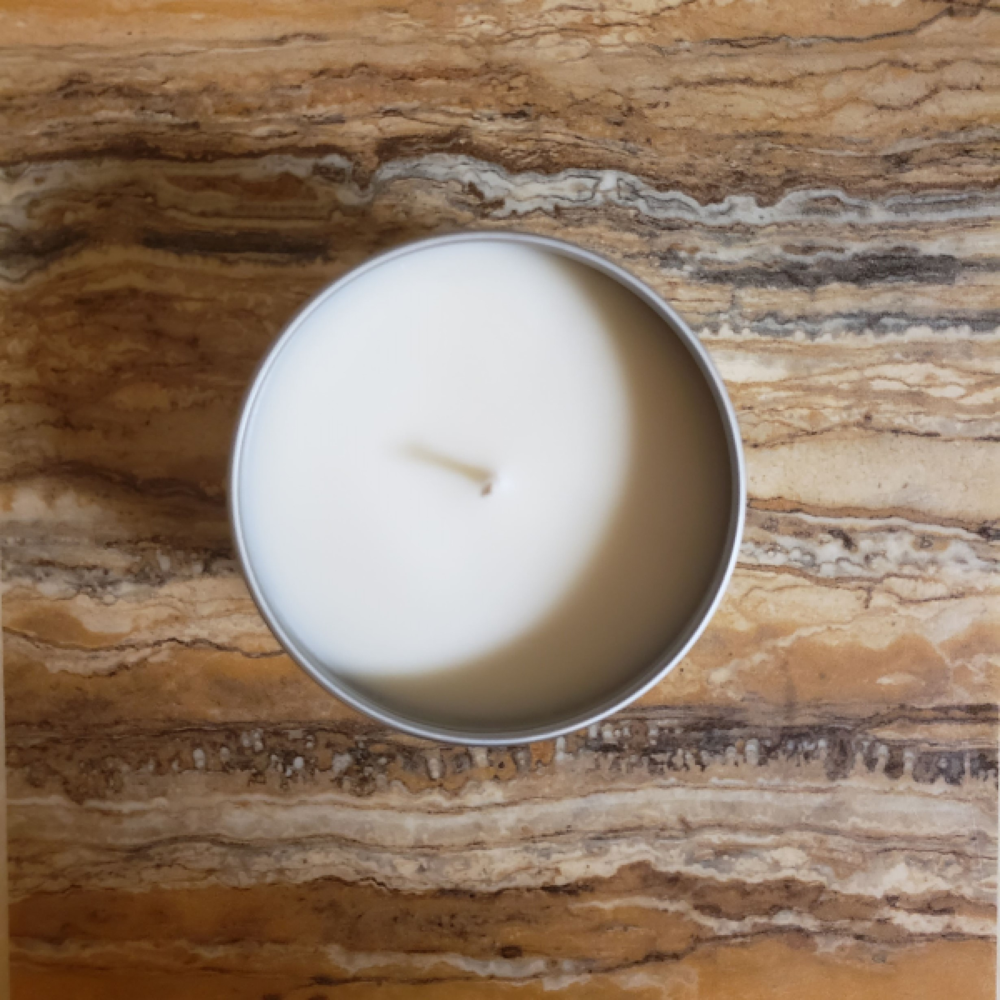

Welcome to Birchbark Candle Co!
We were established in 2019 and our home is Missoula, Montana. Jordan Lyman founded Birchbark Candle Co. to be the premiere site for
Missoulian's to get craft candles. Made with 100% wax, these candles are handpoured within our headquarters, in small batches of just 6
candles at a time! Though Birchbark Candle Co. was on hiatus from making new candles for the last few months, we will be returning in
full force soon! Check out our Instagram page, under Other Links, to get progress updates on our new candle scents and when they will
be available!
Like it's stated above, we currently aren't selling any candles at this point in time, but who knows, farmer's markets may be in our eye for
the 2021 season. We are paired closely with Jade's Sweet Treats, so there may be some colaboration coming for the future. We do currently do
trades for other artisan goods, like the trade we made with Microforest Montana. If you are interested in making one of these trades, please
visit our Contact page.
More content will be coming to the site, such as instructional videos for making candles and how we do our other processes here at Birchbark Candle Co.
Take a look around and fall in love with our 100% soy candles!